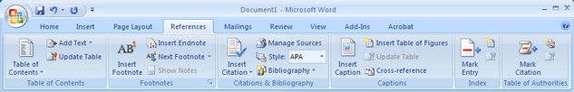
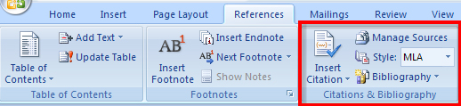
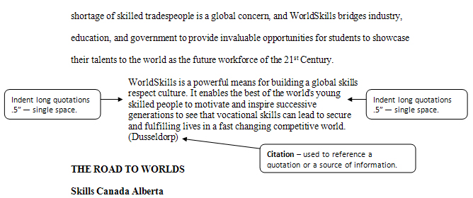
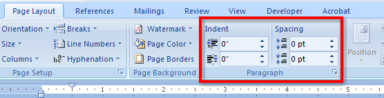
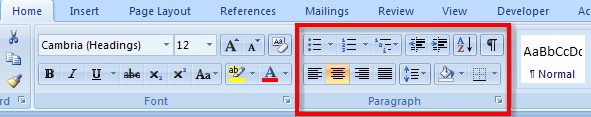
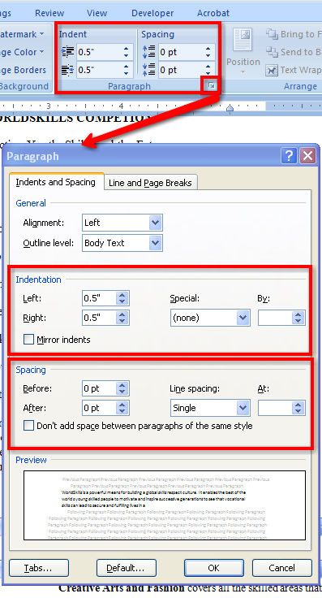
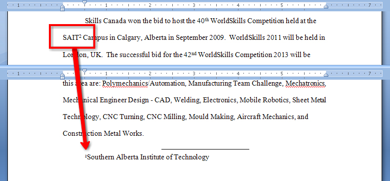

Project 3: Documents for Personal and Business Use
References
Often, it is necessary for a writer to use information, data, or ideas originating with other sources. In fact, you are required by law to provide the source of this information and acknowledge the original author(s) to avoid accusations of plagiarism. The References tab in Microsoft Word 2007 has all the tools you need to help you create and manage references in your report.

Microsoft product screen shot(s) reprinted with permission from Microsoft Corporation.
Citing references is done in several ways:
- Using in-text citations
- Using footnotes or endnotes
- Using bibliographies or works cited pages and reference pages
MLA format uses in-text citations to reference source information, and Microsoft Word 2007 makes it easy to insert properly formatted references. Simply choose the Style (MLA, APA, Chicago) in the Reference tab, Citations & Bibliography group, and click Insert Citation after your quotation. The Create Source window appears for you to include as much information as you can to build your entry. When you click OK, Word 2007 will automatically create and format the citation for you according to the style you have chosen. If you change the style of the report, Word 2007 will automatically reformat the citations and the bibliography for you.

Microsoft product screen shot(s) reprinted with permission from Microsoft Corporation.

Microsoft product screen shot(s) reprinted with permission from Microsoft Corporation.
This is an example of MLA style citation. Notice that quotations longer than four lines need to be indented and single-spaced.

You can control the line spacing and the indentation in the Paragraph group in the Page Layout tab, and you can also access the Paragraph group in the Home tab. This is the only group to appear twice on the ribbon.

Microsoft product screen shot(s) reprinted with permission from Microsoft Corporation.

Microsoft product screen shot(s) reprinted with permission from Microsoft Corporation.
The dialog box launcher accesses the Paragraph window for even more control options.

Microsoft product screen shot(s) reprinted with permission from Microsoft Corporation.
Footnotes appear at the bottom of a page to provide additional information about the source of your quotations, or explanatory information about diagrams, figures, or statistics.

Microsoft product screen shot(s) reprinted with permission from Microsoft Corporation.
Endnotes are similar to footnotes, but they appear on a separate page titled “Notes” at the end of the report, before the works cited page. Endnotes are the publication recommended for MLA-style reports.
When footnotes and endnotes are used to reference print resources in business reports, they include the name of author(s), the title of the publication’s name, the publisher, date, and relevant page number. When referencing online resources, include the title of the web page, the date accessed, and the web address.
Use the Footnotes group in the References tab to insert footnotes or endnotes. The Next Footnote command in the ribbon navigates between footnotes in a document, and Show Notes scrolls the document so you can see where the footnotes or endnotes are located. You can also use the Footnote and Endnotes dialog box to format your notes, and easily convert footnotes to endnotes and vice versa.
Go to the Instructional Videos and watch “Citations and Footnotes in a Report” to learn how to insert citations and footnotes in Microsoft Word 2007.
A bibliography comes at the end of the report and lists all of the reference materials used in the report’s development. MLA format uses a “Works Cited” page; APA format uses a “References” page. When you use the Insert Citation command to reference your sources, Microsoft Word can automatically build your bibliography from the information you included when you created the source. To view a list of the sources cited in the document, click on the Manage Sources button. You can use the Style button to choose the most common style formats, such as MLA or APA, and have Microsoft Word 2007 properly format the citation according to that style. Finally, click the Bibliography button and choose a built-in, preformatted template to have Microsoft Word automatically create your bibliography for you.
Go to the Instructional Videos and watch “Creating a Bibliography” to see how easy it is to create a bibliography using Microsoft Word 2007.
Now that you have included all your reference information, let’s see how easy it is to use the software features in Microsoft Word to automatically add a title page, a table of contents, and an index.